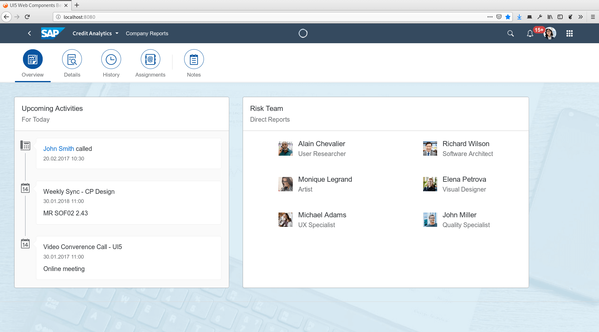
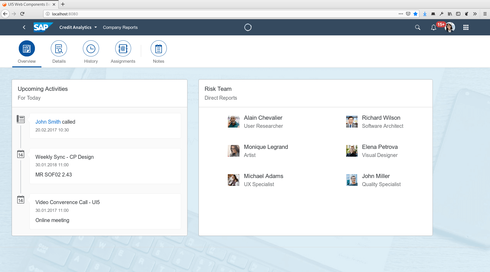

Anfrage
Host
Domain des aufgerufenen Servers, um zwischen mehreren Domains mit derselben IP-Adresse unterscheiden zu können
User-Agent
Name, Version und Betriebssystem des Clients, wobei die Angaben meistens nicht stimmen
Content-Type
MIME-Type und ggf. Zeichensatz der im Body enthaltenen Daten
Accept
MIME-Type der erwarteten Antwort
Accept-Language
Erwartete Sprachen (deutsch, englisch, …) der Antwort
Connection
Hinweise zur Aufrechterhaltung der TCP/IP-Verbindung für weitere Anfragen
Antwort
Content-Type
MIME-Type und ggf. Zeichensatz der im Body enthaltenen Daten
Location
Umleitung auf eine neue URL bzw. URL der gespeicherten Daten
Cache-Control
Hinweise zur Pufferung der Antwort im Browsercache
Last-Modified
Datum und Uhrzeit der letzten Änderung an den Daten
HTTP/0.9
Dies war die ursprüngliche von Tim Berners-Lee entwickelte HTTP-Version, wie sie 1991 veröffentlicht wurde.
In dieser Version gab es nur GET-Anfragen und noch keine Header Fields. Eine Anfrage bestand daher lediglich
aus einer Zeile:
GET /index.html
Die Antwort des Servers beinhalte nur den Inhalt der abgerufenen Datei, sonst nichts.
HTTP/1.0
r 1996 wurde HTTP/1.0 veröffentlicht. Ab hier haben die HTTP-Nachrichten den oben gezeigten Aufbau.
HTTP/1.1
Diese Version wurde 1999 veröffentlicht und brachte weitreichende Verbesserungen. Unter anderem
die Möglichkeit, die Verbindung zwischen zwei Anfragen offen zu halten. Denn zuvor wurde die Verbindung
nach jeder Antwort automatisch getrennt. Da aber gerade der Verbindungsaufbau bei TCP/IP sehr langsam ist,
führte dies zu langen Wartezeiten, wenn mehrere Dateien vom selben Server abgerufen werden mussten.
HTTP/2
2015 wurde HTTP/2 offiziell verabschiedet. In seinen Grundzügen basiert es auf dem von Google entwickelten
SPDY-Protokoll. Die Inhalte der HTTP-Nachrichten sind weitgehend gleich geblieben, jedoch werden sie nicht
mehr in der oben gezeigten Textform kodiert. Stattdessen kommt ein kompaktes und in vielen Dingen eindeutiger
spezifiziertes Binärformat zum Einsatz.¹
Als weitere größere Neuerung führt HTTP/2 Server Push ein, wodurch der Server beim Abruf einer
HTML-Seite selbstständig weitere Dateien an den Browser schicken kann. Somit können Stylesheets, Skripte
und Bilder schon an den Browser geschickt werden, bevor dieser überhaupt weiß, dass er sie benötigen wird.
Stand 2020 hat sich HTTP/2 noch nicht vollständig gegen HTTP/1 durchgesetzt. Sehr viele Webseiten verwenden
weiterhin HTTP/1. Inzwischen unterstützen aber alle Server, Browser und Frameworks das neue Protokoll.
¹ Beispielsweise war bei HTTP/1.x nie definiert, welche Bytefolge ein Zeilenende markiert.

 
